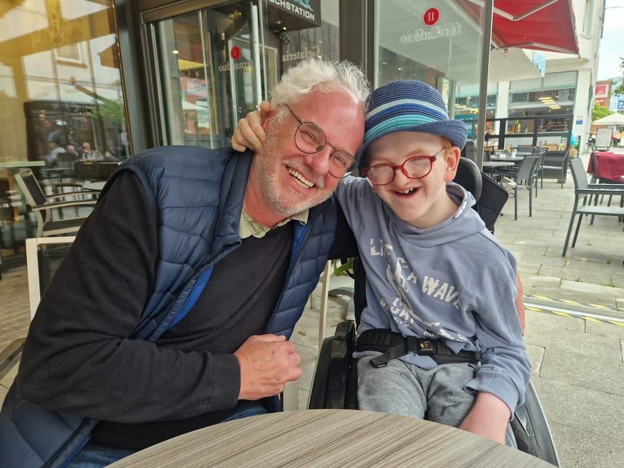

Zeit für die ganze Familie
Wir begleiten Familien, in denen ein Kind oder ein junger Mensch lebensbegrenzend erkrankt ist. Kostenfrei und so lange, wie es gebraucht wird.
Entlastung im Alltag
Was betroffenen Familien oft fehlt, ist nicht Liebe, sondern Zeit: für das kranke Kind, für die Geschwister, für die Arbeit und für sich selbst als Eltern.
Eine ehrenamtliche Familienbegleiterin oder ein Familienbegleiter kommt regelmäßig zu Ihrer Familie. Immer dieselbe Person, damit Vertrauen wachsen kann. Sie entlastet, hört zu und ist an Ihrer Seite.
Die Eltern bleiben dabei immer die Expertinnen und Experten für ihr Kind.
Warum eine eigene Kinderhospizarbeit?
Wenn ein Kind lebensbegrenzend erkrankt, gerät alles ins Wanken. Erwartungen, Wünsche und Träume für die Zukunft zerbrechen oft. Gemeinsam mit Geschwistern, Großeltern und Freunden muss sich die Familie neu orientieren.
Wir begleiten Familien auf diesem Weg und helfen, Mut für ein selbstbestimmtes Leben zu finden, mit Freude an der gemeinsamen Zeit.

Für wen wir da sind
Für Familien mit einem fortschreitend und lebensbegrenzend erkrankten Kind, ab der Diagnose. Auch Geschwister, Großeltern und andere Angehörige gehören dazu.
Wir bieten:
- Beratung und Begleitung in Krisen
- Entlastende Begleitung zu Hause oder im Krankenhaus
- Begleitung für Geschwister und Angehörige
- Gespräche für Kindergärten und Schulen
- Trauerbegleitung nach dem Tod des Kindes
Für Kinder, die einen nahen Menschen verloren haben, gibt es unsere Kindertrauergruppe.
Was Sie uns anvertrauen, bleibt bei uns.
Der erste Schritt
Rufen Sie unser Büro in Wilhelmshaven an: 04421 745258. Wir nehmen uns Zeit für Ihre Fragen und schauen gemeinsam, was Ihre Familie braucht.